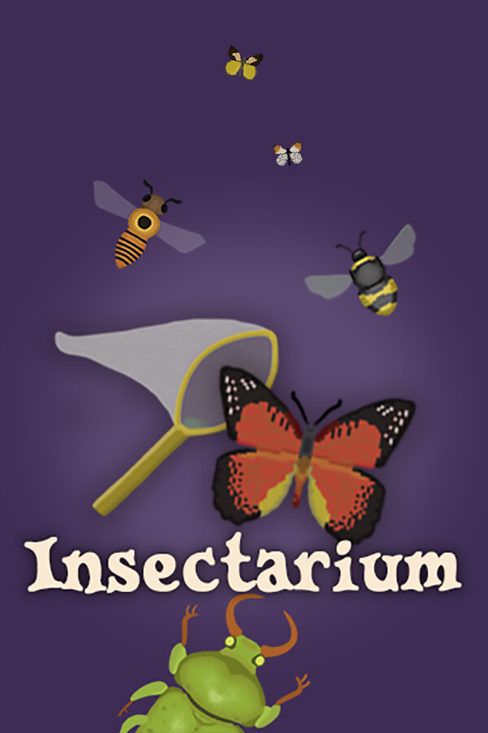

Bug & Seek
Bug & Seek
Details
|  | |
| Playtime | 2h 20m 0s |
| Last Activity | 2023-12-16 0:07:24 |
| Added | 2024-01-17 0:54:05 |
| Modified | 2024-01-17 0:54:33 |
| Completion Status | Completed |
| Library | Steam |
| Source | Steam |
| Platform | PC (Windows) |
| Release Date | 2023-12-06 |
| Community Score | |
| Critic Score | |
| User Score | |
| Genre | Indie Simulator |
| Developer | |
| Publisher | |
| Feature | Single Player |
| Links | Steam Official |
| Tag | |
Description


Being developed by a tiny, two-person dev team, Bug & Seek is a relaxing, open-ended, bug catching sim/creature collector with a mystery twist. In Bug & Seek, you've just sunk your life savings into buying an abandoned Insectarium (bug museum)! Once the lifeblood of the town and its economy, someone stole all the bugs in the dead of night. Now it's up to you to catch and sell bugs, fulfill requests from the local shops, and re-establish the Insectarium as a town icon. Become a master bug hunter as you level up your bug-catching skills, upgrade your equipment, and expand your Insectarium. Meet the locals and complete quests to earn special items and discover what really happened during The Great Bug Heist. And relax! There are no wrong choices, no energy levels to worry about, and plenty of time to complete quests and jobs.
*We are also working on localization into many more languages!*

- Catch Bugs -- With over 175 different real-life bugs, ranging from common insects to some of the most rare and valuable insects in the world, the possibilities are endless. And every bug comes with a humorous tagline and true, informative short description. You'll never look at real insects the same way again.

- Customize and Expand Your Insectarium -- Customize everything, from what tanks you use to what flooring, decorations, and wallpaper you have in your Insectarium. Upgrade your bug-catching equipment and your wardrobe. Build new wings to the Insectarium and create the best Insectarium the town has ever known. And of course, fill it with bugs!

- Explore The World -- Bugs live in every kind of habitat: from meadows, deserts, and forests to wetlands, beaches, and urban environments. And wouldn't you know it? Buggburg has all of these! Explore the variety of biomes in every season, with Buggburg's booming Town Square in the heart of it all.

- Talk with the Locals -- From the mayor to the herb farmer, meet the 19+ locals of the town and perform missions for them to earn special gear and items, secrets and gossip, and maybe even haikus.

- Solve the Mystery -- One year ago someone broke into the Insectarium in the middle of the night and stole all of the bugs in an incident known as The Great Bug Heist. The Insectarium was shut down, and a vital piece of the Buggburg economy ground to a halt. As the new owner of the Insectarium, see if you can piece together what really happened as you solve the mystery and unmask the guilty party!


*Note: Machines with integrated GPUs are not supported and may not properly run Bug & Seek.
Don't forget to wishlist and follow the game and to join the Bug & Seek Discord to stay up to date!